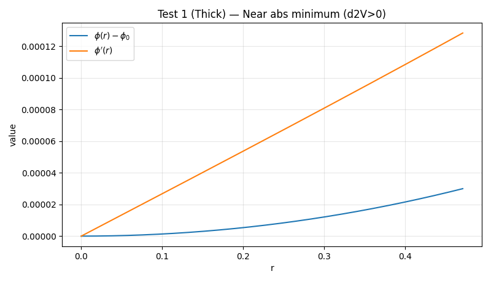
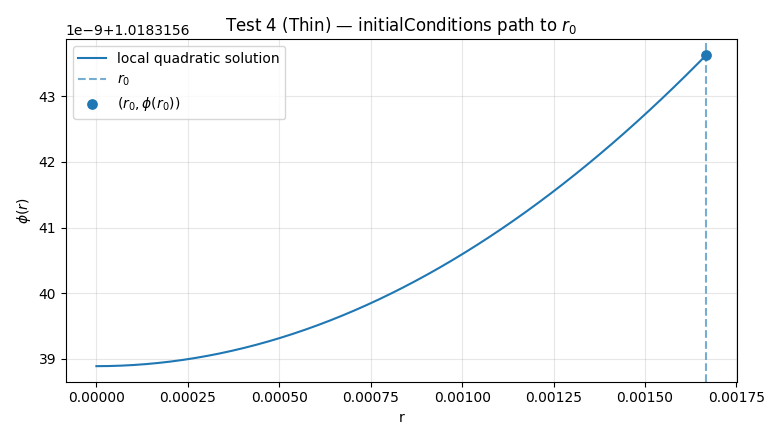
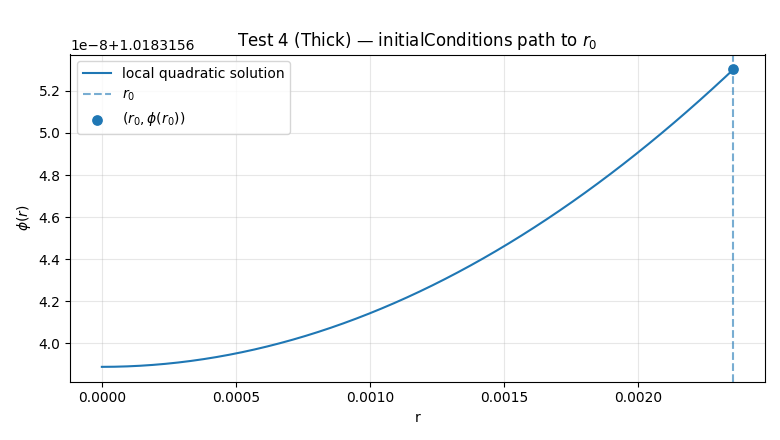

Tests — Single Field Instanton¶
This page collects hands-on examples for the Single Field Instanton module, organized by lot. Each example states the physical meaning, the expected outcome, a slot for the console output/code and (when applicable) an image slot.
These examples correspond to the class SingleFieldInstaton only.
Lot SF-1 — Potential Interface & Validations¶
See the full, executable script for this lot here: tests/single_field/Lot_SF_1.py.
for all example the potential chosen was:
How to run just this case
python -m tests.tunneling1D.single_field.Lot_SF1
Example 1 — Metastability validation (exception path)¶
What it shows (physics): A tunneling solution exists only if the false (metastable) vacuum is higher in energy than the true (absolute) vacuum: \((V(\phi_{\text{meta}}) > V(\phi_{\text{abs}}))\). Swapping them violates metastability and must raise a clear error.
Expected result:
Constructing SingleFieldInstanton with V(phi_metaMin) ≤ V(phi_absMin) raises a PotentialError explaining that the configuration is “stable, not metastable.”
Console output:
=== Test 1: Metastability validation ===
OK: PotentialError raised as expected -> ('V(phi_metaMin) <= V(phi_absMin); tunneling cannot occur.', 'stable, not metastable')
Example 2 — Accuracy of derivative helpers (o4 vs o2) & near-minimum blend (Tests 3 + 4)¶
What it shows (physics):
- For smooth potentials, 4th-order FD (our default) is more accurate than 2nd-order for both (V') and (V'').
- Very close to the absolute minimum, the helper
dV_from_absMinsmoothly blends to the local linear behavior \((V'(\phi)\approx V''(\phi),\Delta\phi)\) , improving numerical stability where finite differences can be noisy.
Expected result:
- Reported max errors for o(4) are lower than for o(2) when compared to analytic (V') and (V'') (both thin and thick quartic examples).
- The lines
delta=... -> dV_from_absMin=..., ref≈d2V*delta=..., rel.err=...show tiny relative errors (≪ 1% for the tiny offsets used).
Console output:
=== Test 3: Built-in FD vs analytic derivatives ===
[THIN] max|dV_fd4 - dV_true| = 1.253e-13
[THIN] max|d2V_fd4 - d2V_true|= 3.888e-10
[THIN] max|dV_fd2 - dV_true| = 7.100e-07
[THIN] max|d2V_fd2 - d2V_true|= 5.002e-07
[THIN] barrier check: V(phi_bar) - V(phi_metaMin) = +2.602e-12
[THICK] max|dV_fd4 - dV_true| = 1.127e-13
[THICK] max|d2V_fd4 - d2V_true|= 3.779e-10
[THICK] max|dV_fd2 - dV_true| = 8.000e-07
[THICK] max|d2V_fd2 - d2V_true|= 5.002e-07
[THICK] barrier check: V(phi_bar) - V(phi_metaMin) = +3.056e-11
=== Test 4: dV_from_absMin near φ_absMin ===
delta=1.0e-06 -> dV_from_absMin=5.300e-07, ref≈d2V*delta=5.300e-07, rel.err=4.538e-10
delta=5.0e-06 -> dV_from_absMin=2.650e-06, ref≈d2V*delta=2.650e-06, rel.err=5.739e-11
delta=1.0e-05 -> dV_from_absMin=5.300e-06, ref≈d2V*delta=5.300e-06, rel.err=3.055e-09
delta=5.0e-05 -> dV_from_absMin=2.651e-05, ref≈d2V*delta=2.651e-05, rel.err=3.604e-07
Example 3 — Visual check: \((V(\phi)), (V'(\phi)), (V''(\phi))\) (Test 5)¶
What it shows (physics):
- Potential shapes for thin vs thick cases.
- Agreement between analytic and built-in derivative operators for (V') and (V'').
- This is a pre-instanton sanity check that the potential interface + derivative helpers behave as expected.
Expected result:
- Curves for analytic vs built-in (V') and (V'') visually overlap.
- Residuals printed by the script are small (implementation- and BLAS-dependent, typically in the (10^{-8})–(10^{-6}) range on these quartics).
Image slots:
Thin-wall — Potential
Thin-wall — First derivative
Thin-wall — Second derivative

Thick-wall — Potential

Thick-wall — First derivative

Thick-wall — Second derivative

Console output:
=== Test 5: Plots (potential and derivatives) ===
[THIN] residuals: max|V'_fd - V'_ref|=1.253e-13, max|V''_fd - V''_ref|=3.888e-10
[THICK] residuals: max|V'_fd - V'_ref|=1.127e-13, max|V''_fd - V''_ref|=3.779e-10
---------- END OF TESTS: Lot SF-1 ----------
Lot SF-2 — Barrier & scales¶
Goal. Visualize the potential barrier geometry and report the characteristic length scale(s) used by the solver:
-
Vertical markers for:
-
\(( \phi_{\rm top} )\): location of the barrier maximum between \(( \phi_{\rm meta} )\) and \(( \phi_{\rm bar} )\);
- \(( \phi_{\rm bar} )\): “edge” on the downhill side where \(( V(\phi_{\rm bar}) = V(\phi_{\rm meta}) )\).
- Horizontal line at \(( V(\phi_{\rm meta}) )\).
-
Printed diagnostics:
-
phi_top,phi_bar, \(( \Delta V_{\rm top} \equiv V(\phi_{\rm top}) - V(\phi_{\rm meta}) )\); rscale_cubic(robust/legacy) and, when defined,rscale_curvfrom \((V''(\phi_{\rm top}))\).
Physics intuition:
- Thin wall (nearly degenerate minima) → sharper barrier (more negative (V'') at the top) → smaller length scale (wall is thinner).
- Thick wall (more separated minima) → broader barrier → larger length scale.
See the full, executable script for this lot here: tests/single_field/Lot_SF2.py.
for all example the potential chosen was:
Script: tests/tunneling1D/single_field/Lot_SF2.py
How to run just this case (Run both examples at once)
python -m tests.tunneling1D.single_field.Lot_SF2 # it includes thin- and thick-wall cases
Test A — Thin-wall: barrier markers & scales¶
What this shows
- \((V(\phi))\) with the barrier top and edge identified.
- Console readout with the barrier height and the two characteristic scales.
Expected outcome (physics)
- \((\phi_{\rm top})\) sits between \((\phi_{\rm meta}=0)\) and \((\phi_{\rm abs}=1)\).
- \((V(\phi_{\rm top}) > V(\phi_{\rm meta}))\) so \(( \Delta V_{\rm top} > 0 )\).
rscale_cubicis finite and typically smaller than in the thick-wall case (thinner wall).rscale_curvis reported finite if \((V''(\phi_{\rm top})<0)\); otherwise shown as ∞ (flat top).
Example console output
========================================================================
CASE: Thin-wall demo
========================================================================
Barrier diagnostics:
phi_metaMin = 0, V(phi_metaMin) = 0
phi_top = 0.46999999834, ΔV_top ≡ V(top)-V(meta) = 0.0132374325
phi_bar = 0.837171431377 (V equals V(phi_metaMin) on downhill side)
Scale diagnostics:
rscale_cubic (legacy/robust) = 1.66770930502
rscale_curv (from V'' at top)= 2.00360975005 with V''(top) = -0.249099999801
Figure “Thin-wall demo: Potential with barrier markers.”
Test B — Thick-wall: barrier markers & scales¶
What this shows
- Same plot/diagnostics as Test A, now for a broader barrier.
Expected outcome (physics)
- \((\phi_{\rm top})\) again lies between \((\phi_{\rm meta})\) and \((\phi_{\rm abs})\).
- Barrier height and curvature differ from the thin-wall case; you should observe a larger
rscale_cubic(thicker wall). rscale_curvis finite if the barrier top is genuinely curved; otherwise ∞ for a flat-ish top.
Example console output (you will paste your run here)
========================================================================
CASE: Thick-wall demo
========================================================================
Barrier diagnostics:
phi_metaMin = 0, V(phi_metaMin) = 0
phi_top = 0.200000001967, ΔV_top ≡ V(top)-V(meta) = 0.0012
phi_bar = 0.310102050146 (V equals V(phi_metaMin) on downhill side)
Scale diagnostics:
rscale_cubic (legacy/robust) = 2.35702262713
rscale_curv (from V'' at top)= 2.49999998156 with V''(top) = -0.16000000236
Figure
“Thick-wall demo: Potential with barrier markers.”

Lot 3 — Quadratic local solution & initial conditions¶
See the full, executable script for this lot here: tests/single_field/Lot_SF3.py.
for all example the potential chosen was:
This lot illustrates the local (small-radius) analytic solution used by SingleFieldInstanton.exactSolution and how we choose
practical starting points via SingleFieldInstanton.initialConditions. We work with the same thin- and thick-wall toy potentials from previous lots.
How to run just this case (Run both examples at once)
python -m tests.tunneling1D.single_field.Lot_SF3 # it includes all tests (more than the ones here)
Test 1 — Local quadratic solution near the true minimum (stable curvature)¶
What it shows
- Around the stable minimum, \((V''(\phi_0)>0)\), the non-singular solution behaves smoothly with \((\phi'(0)=0)\) and a quadratic rise at small (r).
- The plot overlays \((\phi(r)-\phi_0)\) and \((\phi'(r))\) computed by
exactSolution.
Expected result
- \((\phi'(0)=0)\) numerically.
- \((\phi(r)-\phi_0)\) grows \((\propto r^2)\) for very small (r); \((\phi'(r)\propto r)\).
Console excerpts (typical)
=== Test 1: Local quadratic solution near abs minimum (d2V > 0) ===
Thin: dV(phi0)=5.315e-04, d2V(phi0)=5.331e-01, rscale≈1.668e+00
Expectation: phi'(0)=0, smooth quadratic rise; numerical curve should be regular.
Thick: dV(phi0)=8.018e-04, d2V(phi0)=8.036e-01, rscale≈2.357e+00
Expectation: phi'(0)=0, smooth quadratic rise; numerical curve should be regular.
Figure

Test 2 — Local solution near the barrier top (unstable curvature)¶
What it shows
- At the barrier top \((\phi_{\text{top}})\), \((V'(\phi_{\text{top}})\approx 0)\) and \((V''(\phi_{\text{top}})<0)\).
exactSolutionswitches to the \((J_\nu)\) branch; the solution remains regular at (r=0) with \((\phi'(0)=0)\),- but the local shape reflects the inverted curvature.
Expected result
- Printed curvature satisfies \((d^2V(\phi_{\text{top}})<0)\) (up to near-flat numerical cases).
- Plots show a small-(r) “inverted” profile relative to \((\phi_{\text{top}})\), still smooth at the origin.
Console excerpts (typical)
=== Test 2: Local solution near barrier top (d2V < 0) ===
Thin: phi_top=0.470000, dV(phi_top)=-1.268e-10, d2V(phi_top)=-2.491e-01
Expectation: d2V < 0 → oscillatory (J_ν) behavior; still regular at r=0 with phi'(0)=0.
Thick: phi_top=0.200000, dV(phi_top)=-2.250e-11, d2V(phi_top)=-1.600e-01
Expectation: d2V < 0 → oscillatory (J_ν) behavior; still regular at r=0 with phi'(0)=0.
Figure

Test 4 — initialConditions: pick \(((r_0,\phi(r_0),\phi'(r_0)))\) and visualize the short path¶
What it shows
- Given an interior offset \((\Delta\phi_0)\) and a target cutoff \((|\Delta\phi(r_0)|)\), we solve for a practical \((r_0)\).
- The short trajectory from (r=0) to \((r=r_0)\) is plotted using the same local quadratic solution; the chosen starting point is marked.
Expected result
- $|\phi(r_0)-\phi_{\text{abs}}|\gtrsim $ cutoff.
- \(sign(\phi'(r_0))=\operatorname{sign}(\Delta\phi_0)\).
Console excerpts (typical)
=== Test 4: initialConditions (r0, phi(r0), phi'(r0)) ===
Thin: r0=1.667709e-03, phi(r0)=1.018316e+00, phi'(r0)=5.685050e-06
Expectation: |phi(r0)-phi_absMin| ≳ cutoff, and phi'(r0) has the same sign as delta_phi0.
Thick: r0=2.357023e-03, phi(r0)=1.018316e+00, phi'(r0)=1.199135e-05
Expectation: |phi(r0)-phi_absMin| ≳ cutoff, and phi'(r0) has the same sign as delta_phi0.
Figure


Test 5 — initialConditions error path (unreachable cutoff)¶
What it shows
- If \((\Delta\phi_0=0)\) exactly (starting right at the true minimum) and the cutoff is strictly positive,
- the local model never reaches the cutoff; the function raises a clear
IntegrationError.
Expected result
- A caught
IntegrationErrorwith an informative message.
Console excerpts (typical)
=== Test 5: initialConditions error (unreachable cutoff) ===
Thin: Caught expected IntegrationError:
initialConditions: failed to bracket r0 (no crossing found).
Thick: Caught expected IntegrationError:
initialConditions: failed to bracket r0 (no crossing found).
---------- END OF TESTS: Lot SF-3 ----------
- For more context (potential, barrier, and scaling) see Lots SF1 and SF2 above.
Lot SF-4 — ODE core (EOM, event detection, sampler)¶
Goal. Exercise the heart of the solver:
- The equation of motion (EOM) used everywhere:
written as a first-order system in \((y=(\phi,\phi'))\). * The adaptive RKQS driver that advances the solution and classifies steps as undershoot (turning point before reaching the false vacuum) or overshoot (crosses \((\phi_{\rm meta})\) within the step). * The sampler that records \(((\phi,\phi'))\) on a user grid (R) using cubic Hermite interpolation between accepted RK steps.
Physics intuition.
- For the bounce, the field starts near the true minimum \((\phi_{\rm abs})\) and tries to “climb” toward the false minimum \((\phi_{\rm meta})\).
- If it turns around \(((\phi'\to 0))\) before it ever reaches \((\phi_{\rm meta})\), we say undershoot.
- If it crosses \((\phi_{\rm meta})\) at finite radius, that’s an overshoot.
- The friction term \((\alpha,\phi'/r)\) is large at small (r), so the outcome depends delicately on the starting offset and slope.
Script: tests/tunneling1D/single_field/Lot_SF4.py
Run all examples in this lot:
python -m tests.tunneling1D.single_field.Lot_SF4
We keep the same toy potentials as before:
Notes on tolerances. In the examples we build
\((\texttt{epsfrac}=[\texttt{phitol},\texttt{phitol}])\) and
\((\texttt{epsabs}=[\texttt{phitol}\cdot|\Delta\phi|,\texttt{phitol}\cdot|\Delta\phi|/r_{\rm scale}])\).
If you see a “step size underflow” in thin-wall cases, relaxing to phitol=1e-4 is often enough.
Test B — Thin-wall: event detection (two undershoots)¶
What this shows
- How
integrateProfiledetects turning points on a thin-wall potential. - Two runs with different “shooting” parameters (x) (mapped internally to the initial offset \((\Delta\phi_0 = e^{-x}(\phi_{\rm meta}-\phi_{\rm abs})))\).
- For this potential and the chosen cutoff, both choices typically undershoot (large friction and small initial energy).
Expected outcome
- Printed classification:
undershootin both panels, with an event radius \((r_{\rm evt})\) where \((\phi'(r_{\rm evt})\approx 0)\). - Plots show \((\phi(r))\) decreasing from near (\phi_{\rm abs}), then flattening at the turning point before reaching \((\phi_{\rm meta})\) (dashed line).
How the figure is built
- We integrate until the event is detected, then call
integrateAndSaveProfileto sample \((\phi(r))\) densely up to \((r_{\rm evt})\). - The event is marked with a vertical dotted line and a dot at \(((r_{\rm evt},\phi(r_{\rm evt})))\).
Console excerpt
=== Test B: Event detection on thin-wall potential ===
[thin-wall :: x=6.00] event = undershoot at r=1.566617e+01 (phi=2.441311e-01, dphi=6.852158e-17)
[thin-wall :: x=0.20] event = undershoot at r=1.046569e-02 (phi=1.812700e-01, dphi=1.498745e-04)
Figure Thin-wall: two trajectories that undershoot (turning point before the false vacuum).
Test C — Thick-wall: one undershoot, one overshoot¶
What this shows
-
On the thick-wall potential, different (x) give opposite outcomes:
-
A smaller initial offset (low energy) → undershoot;
- A larger offset (high energy) → overshoot (crossing of \(\phi_{meta}\) ).
Expected outcome
- Left panel:
undershootwith \((\phi'(r_{\rm evt})\approx 0)\) at finite (r), and \((\phi(r))\) still above \((\phi_{\rm meta})\). - Right panel:
overshootwith a detected root of \((\phi(r)-\phi_{\rm meta}=0)\); the crossing point is annotated.
Console excerpt
=== Test C: Event detection on thick-wall potential ===
[thick-wall :: x=0.20] event = undershoot at r=4.714045e-03 (phi=1.812693e-01, dphi=4.642159e-06)
[thick-wall :: x=6.00] event = overshoot at r=1.218941e+01 (phi=-4.989932e-15, dphi=-1.713411e-01)
Figure
Thick-wall: undershoot (left) and overshoot (right); both events detected and marked.

Test D — Sampling with integrateAndSaveProfile on a user grid¶
What this shows
- You provide a monotone grid \((R={r_i})\) and a starting state \(((r_0,\phi(r_0),\phi'(r_0)))\).
- The solver advances with adaptive RK and fills every requested point using cubic Hermite interpolation (the same shape preserved internally for events).
Expected outcome
- A smooth curve \((\phi(r))\) across the whole user grid.
RerrisNonein typical runs; if the step would fall belowdrmin, the step is clamped andRerrreports the first radius where this happened.
Console excerpt (paste your run)
=== Test D: integrateAndSaveProfile on a user R-grid ===
Profile sampled at 300 points.
Rerr (first clamped step radius) = None
Figure “Sampling \(\phi(r)\) on a fixed grid provided by the user.
Test F — Explicit initial conditions (thin-wall)¶
What this shows
- Instead of deriving \(((r_0,\phi(r_0),\phi'(r_0)))\) from a shooting parameter (x), we set them explicitly to demonstrate that the event classification logic does not depend on how the initial state was chosen.
-
Two examples:
-
A gentle start near the true minimum with a small negative slope → often undershoot.
- A more aggressive start with sizable downhill slope → tends to overshoot (depending on details of the potential and tolerances).
Expected outcome
- Clear printed event classification with the detected \((r_{\rm evt})\).
- Plots up to the event look consistent with the classification (turning point vs. crossing).
Console excerpt (paste your run)
=== Test F: Explict Initial Conditions on thin-wall potential ===
[thin-wall :: x=[0.001, [0.9, -0.1]]] event = undershoot at r=1.045860e+01 (phi=3.544355e-01, dphi=0.000000e+00)
[thin-wall :: x=[1, [0.3, -2]]] event = overshoot at r=1.176781e+00 (phi=-1.040834e-17, dphi=-1.439106e+00)
---------- END: Lot SF-4 examples ----------
Figure Thin-wall with explicit initial states: undershoot (left) and overshoot (right).
See more: full executable script at
tests/single_field/Lot_SF4.py.
Lot SF-5 — Profile search (findProfile)¶
Goal. Demonstrate the full overshoot/undershoot shooting procedure that determines the instanton profile \(( \phi(r) )\),
and show how two knobs—thinCutoff and the optional “interior fill”—affect only the very small-( r ) part of the curve in thin-wall situations.
Solver recap (physics): We want the regular (non-singular) solution that starts near the true minimum \(( \phi_{\rm abs} )\) at ( r=0 ) and asymptotes to the false minimum \(( \phi_{\rm meta} )\) as \(( r\to\infty )\).
findProfile varies the “shooting” parameter ( x ) (equivalently \(( \Delta\phi_0 \propto e^{-x} )\) )
and repeatedly integrates the ODE.
- If the trajectory crosses \(( \phi_{\rm meta} )\) within a step ⇒ overshoot (initial kick too large).
- If it turns around (hits \(( \phi'(r)=0 )\) ) before reaching \(( \phi_{\rm meta} )\) ⇒ undershoot (kick too small). Bisection on ( x ) lands on the unique critical trajectory; then the profile is sampled densely.
See the full, executable script here: tests/tunneling1D/single_field/Lot_SF5.py.
For all examples we reuse the same toy potentials:
with \(( \phi_{\rm abs}=1 )\) and \(( \phi_{\rm meta}=0 )\), and \(( \alpha=2 )\) (O(3) bounce).
Script: tests/tunneling1D/single_field/Lot_SF5.py
How to run just this lot
python -m tests.tunneling1D.single_field.Lot_SF5
Test 1 — Legacy demo: thin & thick walls (default settings)¶
What this shows
- A faithful reproduction of the legacy quick-start: one call per potential,
profile = SingleFieldInstanton(1.0, 0.0, V, dV).findProfile()
and a plot of \(( \phi(r) )\). * Horizontal guides at \(( \phi_{\rm abs} )\) and \(( \phi_{\rm meta} )\) for context. * Console diagnostics: start/end radii, terminal residual \(( |\phi(r_f)-\phi_{\rm meta}| )\).
Physical expectations
- Thin-wall: The field sits near \(( \phi_{\rm abs} )\) until a relatively sharp transition (“thin” wall) then approaches \(( \phi_{\rm meta} )\).
- Thick-wall: Transition is more gradual; the wall is “thicker.”
- Both runs should converge without manual tuning (defaults are chosen to be robust).
Paste your console excerpt here
=== Test 1: Legacy demo — thin & thick walls ===
=== Test 1: Legacy demo — thin & thick walls ===
[thin-wall] profile: R[0]=0.000000e+00, R[-1]=6.193054e+01
φ(r0)=1.000000e+00, φ(rf)=-1.857581e-04, |φ(rf)-φ_meta|=1.858e-04, φ'(rf)=-1.679e-04
Rerr=None
[thick-wall] profile: R[0]=0.000000e+00, R[-1]=2.089406e+01
φ(r0)=7.420233e-01, φ(rf)=9.449128e-06, |φ(rf)-φ_meta|=9.449e-06, φ'(rf)=-1.251e-04
Rerr=None
Figure “findProfile — legacy thin/thick demos; horizontal guides at \(\phi_{abs}\) and \(\phi_{meta}\).”
Test 2 — Sensitivity to thinCutoff and interior fill (thin wall)¶
What this shows
-
Two thin-wall profiles with identical physics but different handling of the tiny-radius region:
-
Case A:
thinCutoff=0.01,max_interior_pts=None(default). The solver places synthetic points inside the bubble using the local quadratic solution to illustrate the smooth \(( r\to0 )\) behavior. - Case B:
thinCutoff=0.15,max_interior_pts=0. We start farther from the origin (bigger cutoff) and disable interior fill, so the curve begins at \(( r=r_0>0 )\).
Physical expectations
- The two curves should match once ( r ) is beyond the artificially chosen \(( r_0 )\). Only the very small-( r ) portion differs—this is numerical bookkeeping, not different physics.
- The terminal residual and action should be essentially unchanged; only \(( r_0 )\) and the early segment of \(( \phi(r) )\) shift.
Paste your console excerpt here
=== Test 2: Sensitivity to thinCutoff and interior fill (thin wall) ===
[thin (A: thinCutoff=0.01, interior ON)] profile: R[0]=0.000000e+00, R[-1]=6.323233e+01
φ(r0)=1.000000e+00, φ(rf)=-2.498747e-20, |φ(rf)-φ_meta|=2.499e-20, φ'(rf)=-1.572e-05
Rerr=None
[thin (B: thinCutoff=0.15, interior OFF)] profile: R[0]=3.469565e+01, R[-1]=5.052437e+01
φ(r0)=8.500000e-01, φ(rf)=1.395670e-04, |φ(rf)-φ_meta|=1.396e-04, φ'(rf)=4.599e-18
Rerr=None
Figure
Effect of thinCutoff & interior fill in a thin-wall case — curves overlay for \(r \gtrsim r_0\).
Lot SF-6 — Action & post-processing¶
Goal. Take a computed bounce profile and extract physically meaningful, easy-to-compare summaries:
- Total Euclidean action via
findAction. - A full action breakdown (kinetic, potential, interior bulk) and per-r densities via
actionBreakdown. - A uniform φ-grid view of the wall via
evenlySpacedPhi. - Wall geometry (location and thickness) via
wallDiagnostics. - Order-of-magnitude β-proxies via
betaEff(rscale,curvature,wall).
We continue to use the same benchmark potentials as in earlier lots:
with \((\phi_{\rm abs}=1)\) (true vacuum) and \((\phi_{\rm meta}=0)\) (false vacuum).
Script: tests/tunneling1D/single_field/Lot_SF6.py
Run all examples:
python -m tests.tunneling1D.single_field.Lot_SF6
Test A — Action & density breakdown¶
What this shows
-
For each potential, we compute the profile, then:
-
findAction(profile)→ total Euclidean action (S). actionBreakdown(profile)→ numerical values of (S_{\rm kin}), (S_{\rm pot}), interior bulk, and arrays of per-r densities:
- Plots of the densities vs (r) highlight where the action accumulates (typically in the wall).
Expected outcome (physics)
- The thin-wall case shows a narrow, high density peak (sharper wall).
- The thick-wall case shows a broader distribution (wall spread out).
- Console check: \((S_{\rm total}\approx S_{\rm kin}+S_{\rm pot}+S_{\rm interior})\) (within numerical accuracy).
Example console excerpt
=== Test A: Actions and density breakdown ===
[thin-wall]
S_total = 1.093093e+03
S_kin = 1.639021e+03
S_pot = -5.459281e+02
S_interior= 0.000000e+00
(check) S_kin + S_pot + S_interior = 1.093093e+03
[thick-wall]
S_total = 6.630329e+00
S_kin = 9.946114e+00
S_pot = -3.315785e+00
S_interior= 0.000000e+00
(check) S_kin + S_pot + S_interior = 6.630329e+00
Figure “Action densities vs (r): thin (left) and thick (right). The peak localizes around the wall.”
Test B — Uniform φ-grid resampling (evenlySpacedPhi)¶
What this shows
-
We resample \(((\phi,\phi'))\) on an evenly spaced grid in \((\phi)\) rather than (r):
-
This gives a clean, potential-centric view of the wall: \((d\phi/dr)\) vs \((\phi)\).
- Helpful to compare how quickly the field sweeps through field space.
Expected outcome (physics)
- Thin-wall: a sharper feature in \((d\phi/dr)\) near mid-\((\phi)\) (rapid transition).
- Thick-wall: a smoother, broader shape in \((d\phi/dr)\) across \((\phi)\).
Figure “Resampled \((d\phi/dr)\) vs \((\phi)\): thin and thick. Both curves start/end with zero slope at the vacua.”
Test C — Wall diagnostics (location & thickness)¶
What this shows
-
wallDiagnostics(profile, frac=(0.1,0.9))reports: -
r_peak: where \((|\phi'|)\) is maximal (wall center), r_lo/r_hi: radii where \((\phi)\) reaches 10% and 90% of the total excursion,thickness= \((|r_{\rm hi}-r_{\rm lo}|)\)r_mid: where \((\phi)\) is halfway between the vacua.
Expected outcome (physics)
- Thin-wall → smaller thickness;
r_peakbetweenr_loandr_hi. - Thick-wall → larger thickness; markers spaced farther apart.
Example console excerpt
=== Test C: Wall diagnostics (location & thickness) ===
[thin-wall] r_peak=4.706284e+01, r_mid=4.707676e+01, r_lo=4.396172e+01, r_hi=5.019140e+01, thickness=6.229675e+00 (phi_lo=0.900, phi_hi=0.100)
[thick-wall] r_peak=4.399554e+00, r_mid=3.787229e+00, r_lo=0.000000e+00, r_hi=7.990970e+00, thickness=7.990970e+00 (phi_lo=0.900, phi_hi=0.100)
Figure
“(\phi(r)) with vertical markers at r_lo, r_mid, r_hi, and r_peak.”
Test D — \((\beta_{\rm eff})\) proxies: rscale vs curvature vs wall¶
What this shows
We compare three quick inverse-length scales (proxies for a nucleation timescale):
rscale: \((\beta_{\rm eff}=1/r_{\rm scale})\) (always defined, robust).curvature: \((\beta_{\rm eff}=\sqrt{|V''(\phi_{\rm top})|})\) (requires a well-defined barrier top).wall: \((\beta_{\rm eff}=1/\text{thickness})\) (fromwallDiagnostics).
Expected outcome (physics)
- Thin-wall: larger \((\beta_{\rm eff}(\text{wall}))\) (thinner wall → shorter scale).
rscaleandcurvatureare often comparable within \((\mathcal{O}(1))\) factors.- Thick-wall: all three proxies tend to be smaller.
Example console excerpt
=== Test D: β_eff proxies (rscale, curvature, wall) ===
[thin-wall] β_rscale=5.996249e-01, β_curv=4.990992e-01, β_wall=1.605220e-01
[thick-wall] β_rscale=4.242641e-01, β_curv=4.000000e-01, β_wall=1.251412e-01
---------- END: Lot SF-6 examples ----------
Figure “Grouped bars of \((\beta_{\rm eff})\) for thin vs thick, comparing the three proxies.”
See the full, executable script for this lot here:
tests/single_field/Lot_SF6.py
Tip: When comparing different models or temperatures, keep the same plotting and diagnostics so differences in actions, wall thickness, and \((\beta_{\rm eff})\) are immediately visible and quantitatively comparable.